홈 › 시공 분야 › 철거·원상복구
철거·원상복구
TV·상부장·빌트인 냉장고 철거
이사 전 벽걸이 TV 철거와 콘센트 원상복구, 앙카볼트 제거와 벽면 복원, 상부장·오븐장·빌트인 냉장고 철거와 폐기까지 진행합니다. 경기 광주·성남·하남·용인·수원과 서울 송파·강동은 정기적으로 방문합니다.
- 아트월 TV 철거·구멍 복원
- 벽걸이 TV 철거·원상복구
- 앙카볼트 제거·벽면 복원
- 상부장·냉장고장 철거
- 빌트인 냉장고 철거·폐기
- 오븐장 철거
- 벽걸이 세탁기 철거
철거·원상복구 실제 시공 사례
하우스랩 건설이 직접 시공하고 블로그에 기록한 현장 6건입니다.
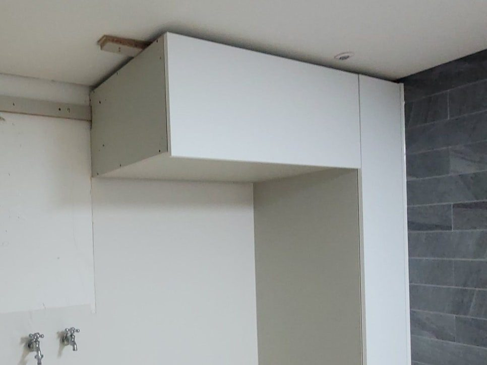
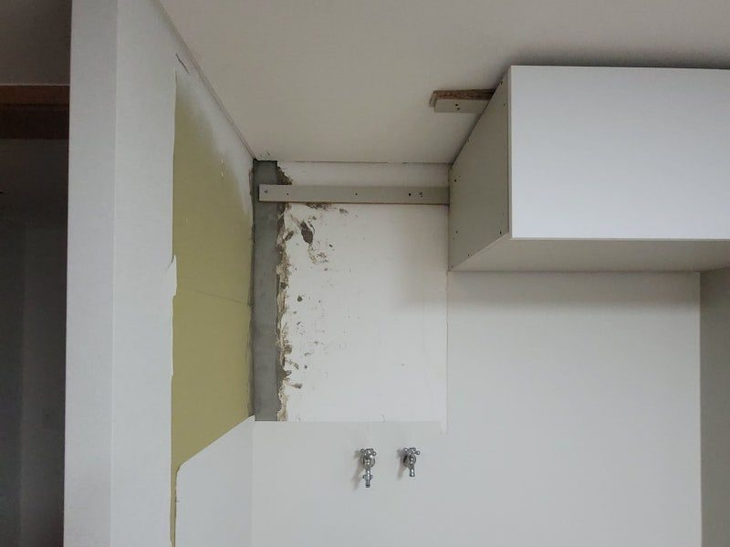
BEFOREAFTER새집으로 이사 전 냉장고장 상부장 철거 작업
“이사하면서 사용하던 냉장고 두 대를 모두 가져갈 예정입니다. 그런데 이사할 집의 냉장고장 상부장 크기가 서로 달라서 냉장고를 넣기가 어렵습니다. 전체를…”
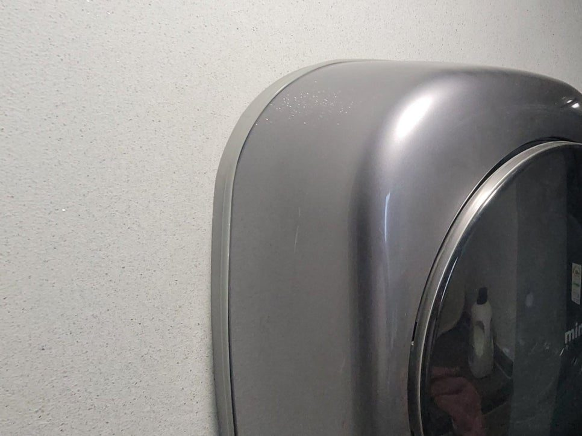
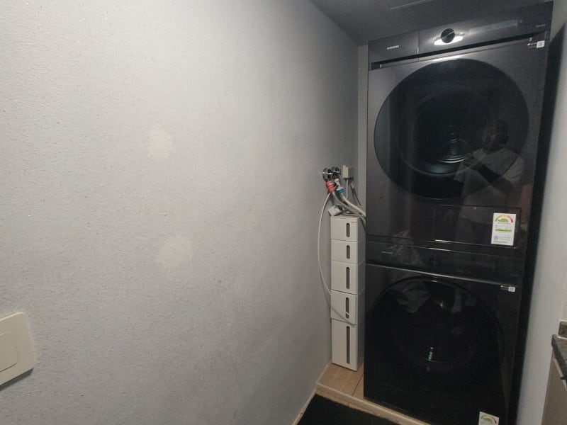
BEFOREAFTER송파 벽걸이 미니 세탁기 철거 앙카볼트 제거와 벽면 복원
“벽에 설치되어 있는 미니 세탁기를 철거하려고 합니다 세탁기만 떼어내는 것이 아니라 벽에 박혀 있는 고정 볼트도 제거하고 철거 후 남는 구멍까지 메워서 정리해…”
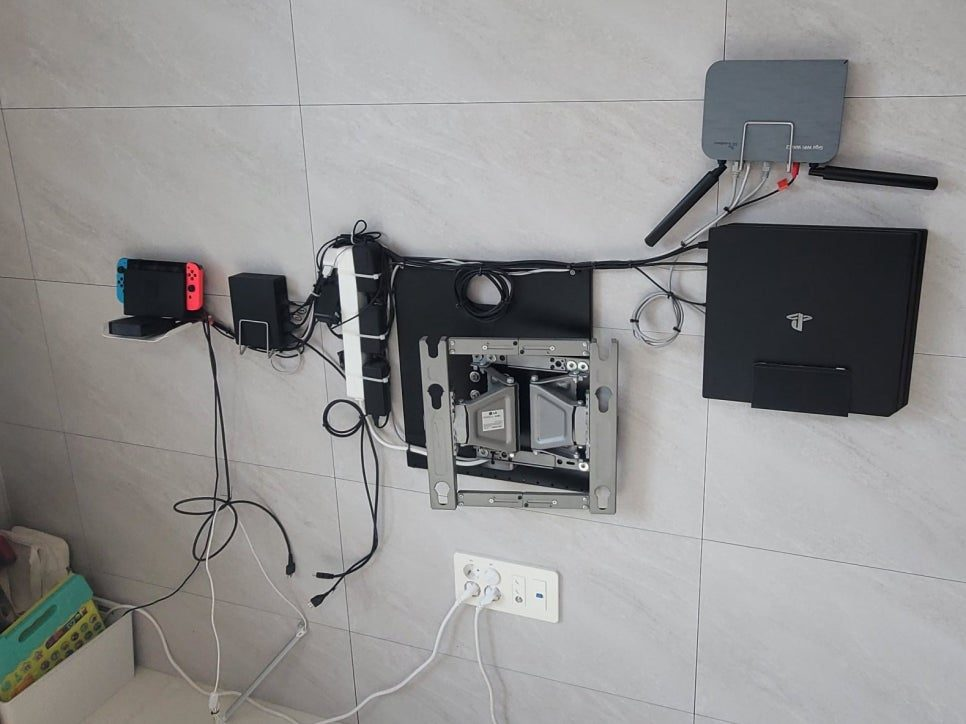
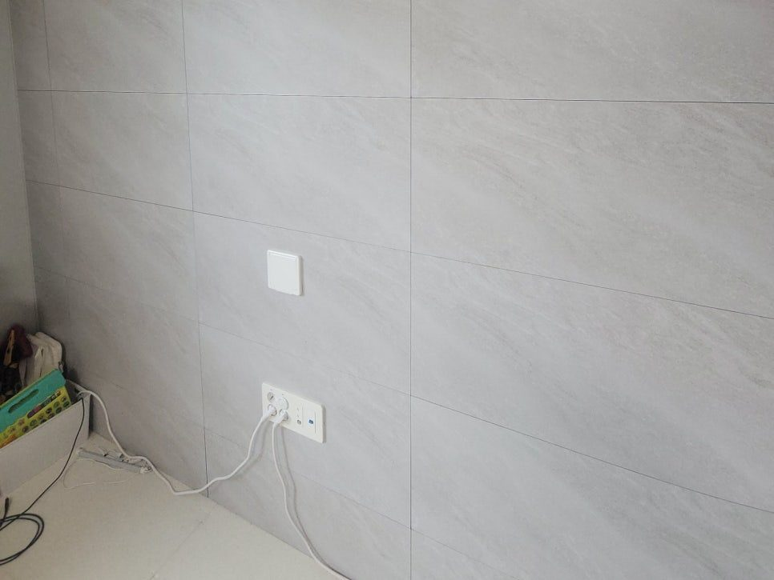
BEFOREAFTER무타공 벽걸이TV 이사 전 철거 및 콘센트 원상복구
“이사를 가게 되어 벽걸이TV를 철거해야 합니다 무타공 방식으로 설치하면서 콘센트를 이용했는데 TV와 설치 장비를 모두 철거하고 콘센트도 원래대로 복구해 주세요”
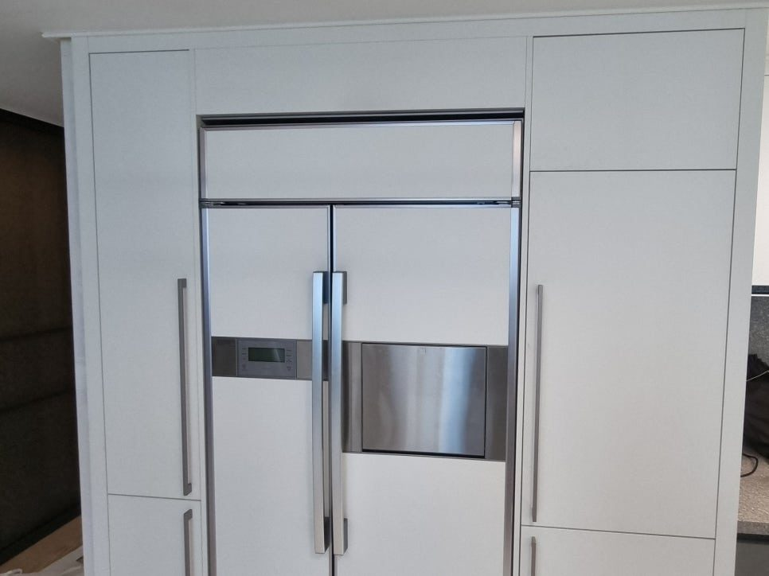
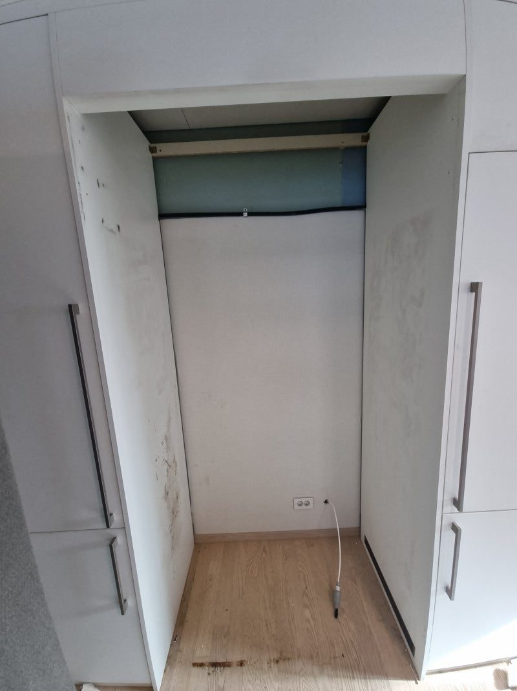
BEFOREAFTER빌트인 냉장고 철거 후 외부 이동 폐기까지 진행
“주방에 설치된 대형 빌트인 냉장고를 이제 사용하지 않을 예정입니다 제품이 너무 크고 무거워서 직접 빼내기가 어렵습니다 주변 가구가 손상되지 않게 냉장고를…”
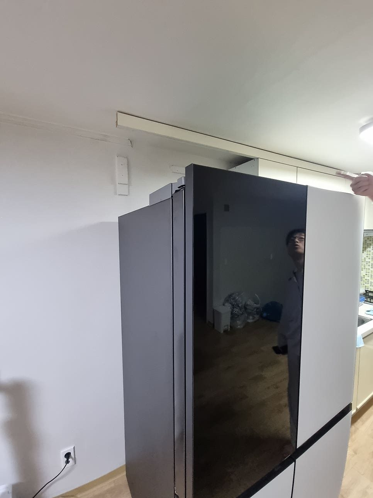
BEFOREAFTER이사 냉장고 설치 상부장 간섭 부분 철거 작업
“이사하면서 기존에 사용하던 냉장고를 그대로 가져왔는데 냉장고를 넣으려고 하니 위에 있는 상부장에 걸려서 안쪽으로 들어가지 않습니다 냉장고를 이 자리에 설치할…”
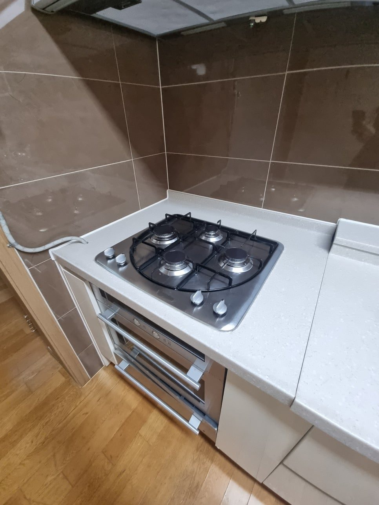
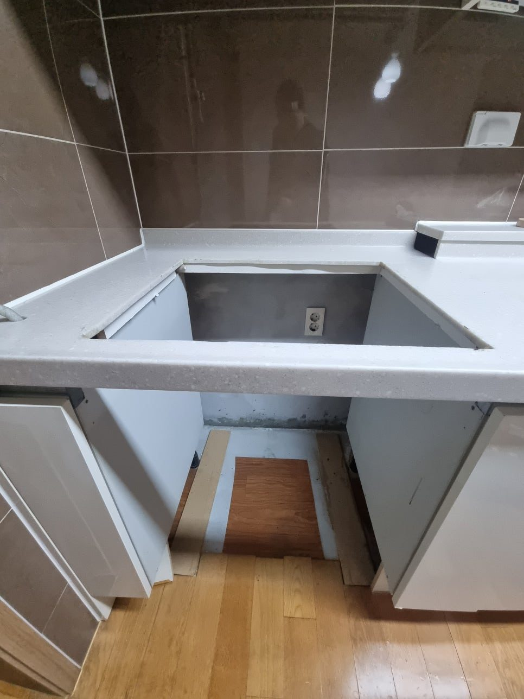
BEFOREAFTER성남 오븐장 철거 식기세척기 자리 만들기 주방 리폼
“기존에 사용하던 빌트인 가스레인지와 오븐장은 더 이상 사용하지 않습니다. 며칠 뒤 식기세척기가 들어올 예정이라 미리 철거해서 설치할 수 있는 공간을 만들어…”
다른 시공 분야
사진 상담 · 무료 견적 · 현장 직접 시공 · 전체 사진 1장 + 문제 부위 사진 1장